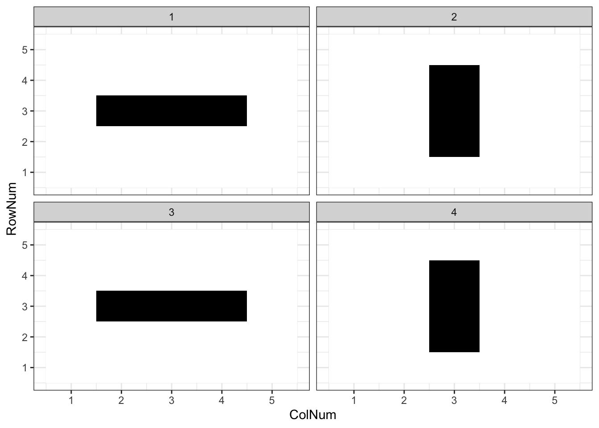
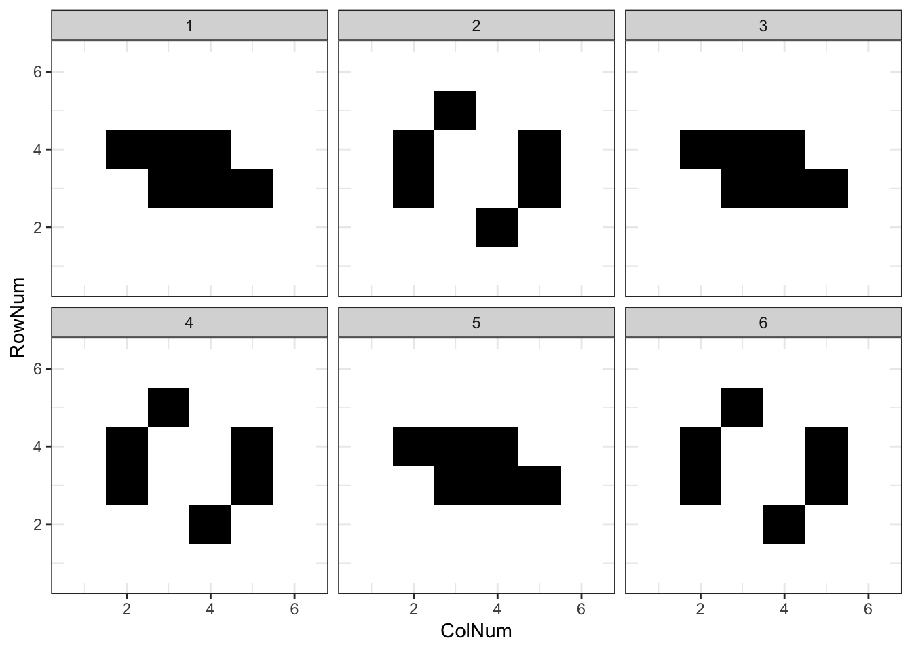
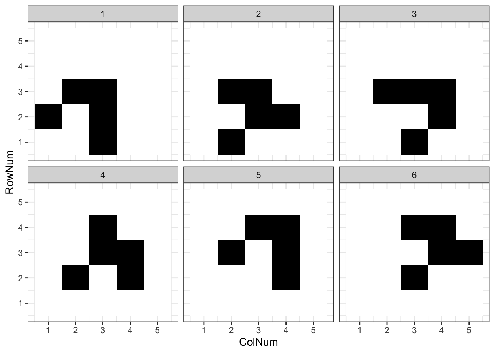
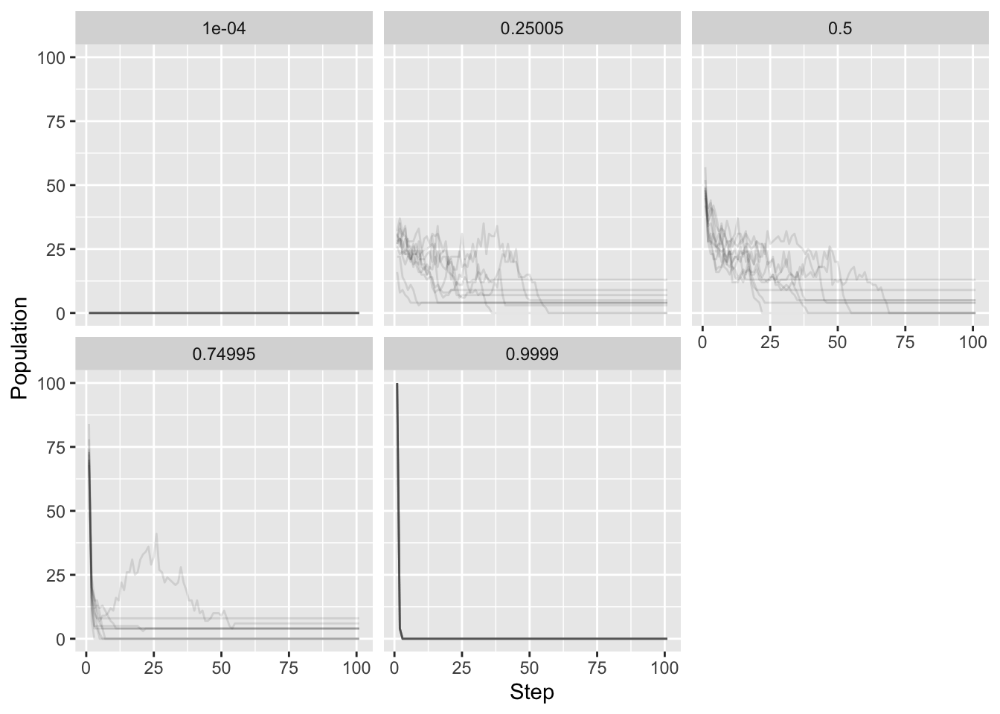

Game of Life
Searching for Oscillators in Conway’s Game of Life.
Introduction
Conway’s Game of Life is a toy model of cells that can produce rich outputs from simple rules. Some have gone as far as to use this game to create logic gates. In this post, we’ll be setting prerequisites to recognize interesting patterns not pushing the limits of what one can do with this game.
As a refresher before diving in, here are the rules of the game.
- Cells in underpopulated locations (0 or 1 adjacent cells) die.
- Cells in populated locations (2 or 3 adjacent cells) survive.
- Cells in overpopulated locations (>3 adjacent cells) die.
- Empty spaces in sufficiently populated locations (3 adjacent cells) spawn cells.
To start, we’ll create a matrix with cells (1) and spaces (0). Next we’ll add functions to apply these rules for a given number of iterations. Finally, we can randomly generate matrices and use cell population change over time to find patterns that oscillate.
Implementing the rules of the game
First we’ll define a matrix containing a “blinker” oscillator. This will help us test that the rules are correctly implemented. Since we’re growing “cells” we’ll give variables and functions related names such as “petri dish” for the matrix containing the cells.
Next we’ll tally the neighbors for each location. We could step through every row iand column j tallying the neighbors like so: sum(temp[c(i-1, i, i+1), c(j-1, j, j+1)]) - temp[i, j]. This approach would require logic for the edges and will be sluggish on large matrices. We’ll use a vectorized approach here instead. We’ll create eight matrices shifting the matrix orthogonally and diagonally relative to the starting one. Then we can sum these to get a matrix containing the number of neighbors each cell has. To account for the edges of the where we’ll surround the dish with 0s.
rows <- nrow(petri_dish)
cols <- ncol(petri_dish)
# surround petri dish with 0s
temp <- matrix(data = 0, nrow = rows+2, ncol = cols+2)
temp[2:(1+rows), 2:(1+cols)] <- petri_dish
# the location of the petri dish
center_rows <- 2:(1+rows)
center_cols <- 2:(1+cols)
# shift the row and columns selected so we get each orthogonal and diagnonal shift
slice_shifts <- expand.grid(
row_shift = c(-1, 0, 1),
col_shift = c(-1, 0, 1))
# drop the no shift entry 0, 0
slice_shifts <- slice_shifts[!(slice_shifts$row_shift == 0 & slice_shifts$col_shift ==0), ]
# Tally up neighbors
neighbor_matix <- matrix(data = 0, nrow = rows, ncol = cols)
for (i in 1:nrow(slice_shifts)){
temp_rows <- center_rows+slice_shifts[i, "row_shift"]
temp_cols <- center_cols+slice_shifts[i, "col_shift"]
neighbor_matix <- neighbor_matix + temp[temp_rows, temp_cols]
}Now we can create boolean matrices based on the neighbor tally and multiply these current matrix to
# apply rules
# live cells with 2-3 neighbors -> live
surviving_cells <- petri_dish * matrix(
as.numeric(neighbor_matix %in% c(2, 3)),
nrow = rows,
ncol = cols)
# dead cells with 3 neighbors -> live
revived_cells <- (petri_dish == 0) * matrix(
as.numeric(neighbor_matix %in% c(3)),
nrow = rows,
ncol = cols)
# new petri dish
petri_dish <- surviving_cells + revived_cellsgame_of_life <- function(petri_dish = petri_dish){
rows <- nrow(petri_dish)
cols <- ncol(petri_dish)
# surround petri dish with 0s
temp <- matrix(data = 0, nrow = rows+2, ncol = cols+2)
temp[2:(1+rows), 2:(1+cols)] <- petri_dish
center_rows <- 2:(1+rows)
center_cols <- 2:(1+cols)
slice_shifts <- expand.grid(
row_shift = c(-1, 0, 1),
col_shift = c(-1, 0, 1))
# drop 0, 0
slice_shifts <- slice_shifts[!(slice_shifts$row_shift == 0 & slice_shifts$col_shift ==0), ]
# Tally up neighbors
neighbor_matix <- matrix(data = 0, nrow = rows, ncol = cols)
for (i in 1:nrow(slice_shifts)){
temp_rows <- center_rows+slice_shifts[i, "row_shift"]
temp_cols <- center_cols+slice_shifts[i, "col_shift"]
neighbor_matix <- neighbor_matix + temp[temp_rows, temp_cols]
}
# apply rules
# live cells with 2-3 neighbors -> live
surviving_cells <- petri_dish * matrix(as.numeric(neighbor_matix %in% c(2, 3)),
nrow = rows,
ncol = cols)
# dead cells with 3 neighbors -> live
revived_cells <- (petri_dish == 0) * matrix(as.numeric(neighbor_matix %in% c(3)),
nrow = rows,
ncol = cols)
# new petri dish
petri_dish <- surviving_cells + revived_cells
return(petri_dish)
}steps = 4
petri_list <- list(petri_dish)
for(i in 1:steps){
petri_list[[i+1]] <- game_of_life(petri_dish = petri_list[[i]])
}
# add step
walk(1:length(petri_list), function(i){
temp <- petri_list[[i]]
temp <- as.data.frame(temp)
temp$RowNum <- 1:nrow(temp)
temp$Step <- i
petri_list[[i]] <<- temp
})
petri_dish_history <- do.call(rbind, petri_list)
petri_dish_history <- petri_dish_history %>%
gather(ColNum, Cell,
names(petri_dish_history)[!(names(petri_dish_history) %in% c("RowNum", "Step"))]) %>%
mutate(ColNum = as.numeric(str_remove(ColNum, "V")))grow_petri_dish <- function(petri_dish = petri_dish,
steps = 1){
petri_list <- list(petri_dish)
for(i in 1:steps){
petri_list[[i+1]] <- game_of_life(petri_dish = petri_list[[i]])
}
# add step
walk(1:length(petri_list), function(i){
temp <- petri_list[[i]]
temp <- as.data.frame(temp)
temp$RowNum <- 1:nrow(temp)
temp$Step <- i
petri_list[[i]] <<- temp
})
petri_dish_history <- do.call(rbind, petri_list)
petri_dish_history <- petri_dish_history %>%
gather(ColNum, Cell,
names(petri_dish_history)[!(names(petri_dish_history) %in% c("RowNum", "Step"))]) %>%
mutate(ColNum = as.numeric(str_remove(ColNum, "V")))
petri_dish_history <- petri_dish_history[, c("RowNum", "ColNum", "Cell", "Step")]
return(petri_dish_history = petri_dish_history)
}petri_dish <- t(matrix(c(
0, 0, 0, 0, 0,
0, 0, 0, 0, 0,
0, 1, 1, 1, 0,
0, 0, 0, 0, 0,
0, 0, 0, 0, 0
), nrow = 5))
petri_dish_history <- grow_petri_dish(petri_dish = petri_dish,
steps = 3)
petri_dish_history %>%
mutate(Cell = ifelse(Cell == 0, "A", "B")) %>%
ggplot(aes(x = ColNum,
y= RowNum,
fill = Cell))+
geom_tile()+
facet_wrap(.~Step)+
scale_fill_manual(values = c("White", "Black"))+
theme_bw()+
theme(legend.position = "")
Testing the game
# toad
grow_petri_dish(petri_dish =
t(matrix(c(
0, 0, 0, 0, 0, 0,
0, 0, 0, 0, 0, 0,
0, 0, 1, 1, 1, 0,
0, 1, 1, 1, 0, 0,
0, 0, 0, 0, 0, 0,
0, 0, 0, 0, 0, 0
), nrow = 6)),
steps = 5) %>%
mutate(Cell = ifelse(Cell == 0, "A", "B")) %>%
ggplot(aes(x = ColNum,
y= RowNum,
fill = Cell))+
geom_tile()+
facet_wrap(.~Step)+
scale_fill_manual(values = c("White", "Black"))+
theme_bw()+
theme(legend.position = "")
# glider
grow_petri_dish(petri_dish =
t(matrix(c(
0, 0, 1, 0, 0,
1, 0, 1, 0, 0,
0, 1, 1, 0, 0,
0, 0, 0, 0, 0,
0, 0, 0, 0, 0
), nrow = 5)),
steps = 5) %>%
mutate(Cell = ifelse(Cell == 0, "A", "B")) %>%
ggplot(aes(x = ColNum,
y= RowNum,
fill = Cell))+
geom_tile()+
facet_wrap(.~Step)+
scale_fill_manual(values = c("White", "Black"))+
theme_bw()+
theme(legend.position = "")
# randomly initialize petri dish
innoculate_petri_dish <- function(
petri_density = .3,
petri_rows = 4,
petri_cols = 4,
surrounding_spaces = 0,
seed = 897987,
...
){
# if a seed value is provided use it
if (exists("seed")){
set.seed(seed = seed)
}
# create a blank plate
petri_dish <- matrix(0,
nrow = petri_rows+(surrounding_spaces*2),
ncol = petri_cols+(surrounding_spaces*2),
)
# place a "drop" of cell containing solution in the center
cell_drop <- matrix(
rbinom(n = petri_rows*petri_cols,
size = 1,
prob = petri_density),
nrow = petri_rows,
ncol = petri_cols)
petri_dish[(surrounding_spaces+1):(surrounding_spaces+petri_rows), (surrounding_spaces+1):(surrounding_spaces+petri_cols)] <- cell_drop
return(petri_dish)
}What density is most conducive to survival?
control_df <- as.data.frame(
expand.grid(
petri_density = seq(0.0001, 0.9999, length.out = 5),
seed = seq(1, 10)
)
)
#TODO
# note, this can be easily parallelized with furrr::future_map()
tictoc::tic()
experiment_list <- map(seq(1, nrow(control_df)), function(i){
experiment <- track_petri_dish(
petri_dish_history =
grow_petri_dish(
petri_dish = innoculate_petri_dish(
petri_density = control_df[i, "petri_density"],
petri_rows = 10,
petri_cols = 10,
surrounding_spaces = 0,
seed = control_df[i, "seed"]
),
steps = 100) )
experiment$Density = control_df[i, "petri_density"]
experiment$Seed = control_df[i, "seed"]
return(experiment)
})
tictoc::toc()8.048 sec elapsedexperiment_results <- do.call(rbind, experiment_list)
experiment_results %>%
ggplot(aes(x = Step, y = Population, group = Seed))+
geom_path(alpha = 0.1)+
facet_wrap(.~Density)